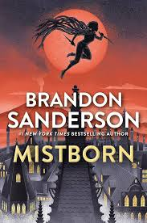

Oppression of the skaa
The skaa live under brutal oppression. They are enslaved, beaten, forbidden from learning, and executed if they rebel. After generations of fear, most believe rebellion is impossible.

A guide to Mistborn: The Final Empire
The story follows a daring plan to challenge the Lord Ruler. It is not just a heist; it is an attempt to wake a crushed people and remind them they can fight back.
The skaa live under brutal oppression. They are enslaved, beaten, forbidden from learning, and executed if they rebel. After generations of fear, most believe rebellion is impossible.
Kelsier assembles a crew of specialists to strike at the heart of noble power. The plan involves training Vin as a Mistborn, destabilizing noble houses, and cracking the economic system that keeps the empire in place.
Vin begins as a wary street thief and grows into a Mistborn under Kelsier's guidance. She learns to trust others, masters Allomancy, and infiltrates noble society to support the plan.
The rebellion relies on symbols, stories, and courageous acts that spread through the skaa. The goal is to turn quiet endurance into a shared belief that the Final Empire can be challenged.
Kelsier leads the rebellion as the Survivor of Hathsin. Dockson is the strategist, Breeze the Soother, Ham the Pewterarm, Clubs the Smoker, Spook the Tineye, and Sazed the Terris scholar who educates and protects the crew.
Luthadel is the capital of the Final Empire, marked by noble estates and massive skaa slums. Kredik Shaw is the Lord Ruler's palace. The Pits of Hathsin are a brutal prison mine that produces atium.
The plan aims to unite skaa workers, weaken noble control, and show that the Lord Ruler can be defied. In a world built on fear, hope is the most dangerous weapon.